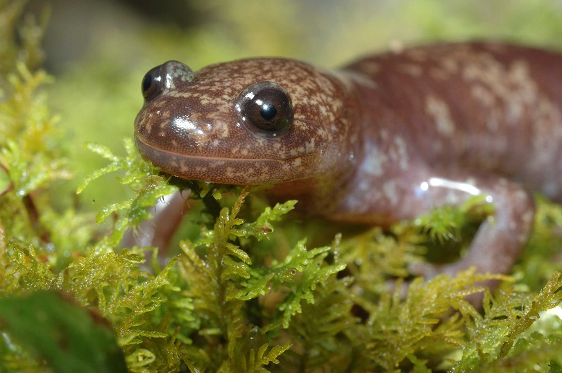

- 科名：小鯢科（Hynobiidae）
- 最大體長：18cm
- 瀕危狀態：瀕臨絕種野生動物
- 形態特徵：紅褐色，散佈不規則淺色斑，後肢具四趾。幼體：乳白色，具外鰓；隨成長顏色加深。
- 棲所生態：棲息於高海拔針葉林或闊葉林底層、溪流附近。產卵於沙地中。卵鞝包被卵。以小型無脊椎為食。侷限性分布在合歡山與能高山的中高海拔地區的原始森林中，數量十分稀少。
台灣山椒魚 Hynobius formosanus